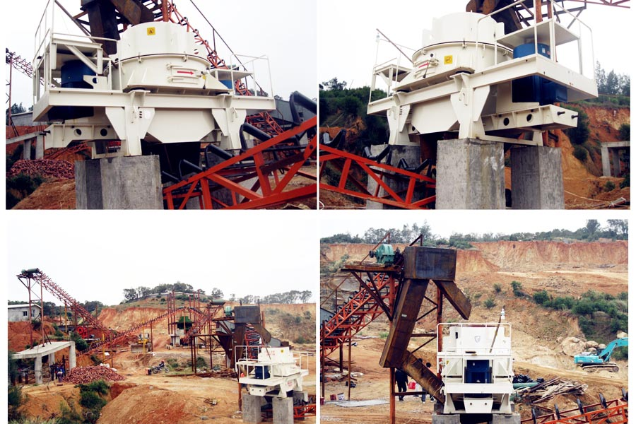

Construction waste crushing production line

Mobile construction waste crushing station for urban construction waste crushing.
robo sand making machine
robo sand making machine
Perlite is an important industrial raw material, from natural mined perlite Because all shapes and sizes, subject to sand processing materials used in order to meet the needs of the production sector. Perlite sand production line has a combination of a variety of devices, including broken equipment, sand making equipment, feeding equipment, transportation equipment, core equipment is perlite Sand. About Perlite sand production line of broken equipment, which has a variety of combinations, this article introduces two commonly used combination.

1, broken jaw Crusher + Fine Crusher
Jaw crusher crushing capacity is strong, crushing ratio, perlite hardness is relatively large, the general use of jaw crusher sand production in perlite as a broken, that rough broken, jaw crusher perlite The stronger productivity is also higher. Crusher also called efficient crushing machine, crushing machine to use as a two-stage crushing equipment, can get better crushing effect, small Crusher finished size, perlite can be broken into very small particles, meet into the Sand material needs.
2, broken jaw Crusher + Impact Crusher
Combination of jaw crusher and impact crusher can effectively reduce production and maintenance costs, since both are relatively simple structure, operation and maintenance more convenient, less wearing parts, production process, low failure rate, low maintenance costs. Using broken jaw crusher + impact crusher combination can effectively reduce the powder production process, and enhance the value of the finished product, reduce dust pollution.
Perlite sand production line, reasonable if broken equipment combinations, can effectively improve the production efficiency of the production line, reducing energy consumption, users select the relevant broken equipment, but also full of its own production, so as to ensure efficient production .
Original title: Perlite sand production line in two crushing combination
Leave Me A Message, Now
If you have any questions regarding equipment prices, production line configuration or other problems, you can send a message to us, we will contact you soon.